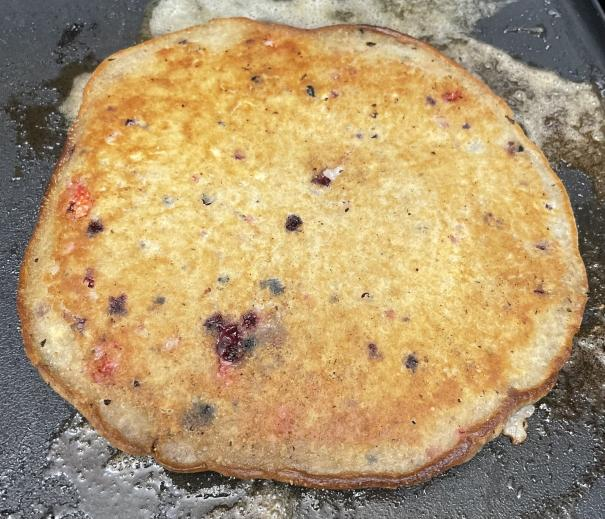

Pancake Recipe

Description
A fluffy, modifiable pancake recipe that makes pancakes with crispy edges. Easy to put together and tastes absolutely amazing!
Not so resource intensive with a melt in your mouth flavor.
Ingredients
- 1 1/2 cup flour
- 3 1/2 tsp baking powder
- 1 1/2 tbs sugar
- 1/3 tsp salt
- 1/3 tsp garlic powder
- 1 1/4 cup milk
- 3 tbs bitter, melted
- 1 egg
Steps
- Mix dry ingredients thoroughly.
- Mix in milk, melted butter, and egg until texture is smooth.
- If desired, add a cup of sliced berries.
- Heat lightly oiled pan or griddle to medium/high.
- Using about 1/4 cup pancake batter per pancake (for best cooking experience) pour batter in pan or on griddle once hot.
- Cook until bubbles form and the edges become dry, flip, cook for 2-3 minutes and serve.
- Repeat until gone or store remaining batter in refridgerator.